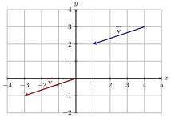

Note that since we are denoting the vector by a single pair of numbers, this pair of
numbers represents the tip of the vector, and we assume that the tail of the vector is
at the origin.

Vectors are lists of numbers that denote direction and magnitude.
The most successful textbook that was ever written was Euclid’s Elements. While you are surely skeptical of this claim, and it is good to be skeptical, consider this: Euclid’s Elements was used (in various editions) as a primary mathematics textbook for nearly 2000 years. There are few textbooks (if any) that can share this claim. However, Euclid’s Elements does have its shortcomings. Euclid defines a point as “that which has no part.” Many people (including this author) find this to be a pretty confusing definition. What does Euclid mean by this statement? However, from our modern viewpoint, a point is an ordered list of numbers, like We have grown to see that a point should be thought of as location, and nothing but location. With this definition in mind, it doesn’t really make sense to have operations between points like addition or subtraction.
When trying to understand the world around us, we are often concerned with quantities that denote both direction and magnitude. We can do this by starting with two points
Vectors need not be limited to the -plane. They can have any dimension.
In we usually label the first component the “-component,” and the second component the “-component.” In we usually label the components “,” “,” and “.”
So far, we have mostly studied functions which take single numbers as their inputs and output either individual numbers or ordered pairs (as in the case of parametric functions). Now, we set the stage for the study of functions that accept lists of numbers as inputs and give lists of numbers as outputs. When we want to keep track of more than one number at a time, especially when we have more than one output depending on the same input, we often use a vector.
Since vectors are determined only by their direction and magnitude, notation such as completely describes a vector, since we assume the tail is at the origin. We should point out that the following are other types of notation for vectors. When dealing with a vector in , , or dimensions, we can visualize the vector as a directed arrow, where the magnitude of the vector is the length of the arrow.
You were able to find the answer to the question above because you are used to working with dimensional objects. We make the following definition in dimensions.
Notice that the magnitude of the vector is just the distance between the origin and the point determined by the components of our vector!
We can add vectors of the same dimension together by component-wise addition. Here, it is useful to write vectors vertically.
Now, let us investigate the geometry of addition of vectors. Let and . If we place the tail of the vector at the tip of the vector , like this:
Hence,

We can also multiply vectors by a scalar (a number), by multiplying each component by the scalar:
Thinking about how the magnitude of a vector changes when we multiply by a scalar reveals why scalars are called scalars.
You can use this interactive to see how scalars affect vectors.
Vectors with magnitude are particularly important.
Now consider any vector . We can extract its direction and magnitude in the following way. This equation illustrates the fact that a vector has both magnitude and direction, where we view a unit vector as supplying only direction information. Identifying unit vectors with direction allows us to define parallel vectors.
Note that the zero vector is directionless, because there is no unit vector in the “direction” of . Different authors have different conventions regarding the zero vector. Some even say the zero vector is “parallel to every vector.” We prefer to simply say that the zero vector has no direction, as this statement is grounded in the fact that unit vectors provide direction information. So, in our case, the zero vector is not parallel to any vector. Check for yourself using our definition of parallel vectors!
Sometimes you want to specify a vector with an angle relative to a given line. If we graphed all of the unit vectors in with their tails at the origin, then the tips would all lie on the unit circle.
There are three famous unit vectors: , , . Typically when working in two dimensions and in three dimensions Any two- or three-dimensional vector can be expressed in terms of these vectors.
Vectors are a great tool for applied mathematics.
The sum of the entries in the first component is 0, and the sum of the entries in the second component is also 0. This leads us to the following system of equations.
We leave it to the reader to verify that the solution is
Look again at the big picture for our example with the weight. We knew from the physical situation that we had three vectors which should together sum to the zero vector. Instead of having to somehow describe this situation with a single equation, we used the components of the vectors to form a system of equations, which was much easier to solve! Modeling the problem with vectors helped us to apply our mathematical tools smartly.
You may be wondering, “What’s the difference between a point and a vector?” Here’s the deal: A point specifies location alone. This location is denoted by an -tuple A vector is also represented by an -tuple but the interpretation of this -tuple is quite different than that of a point. With a vector, the tuple represents the location of the “tip” of the vector when the “tail” of the vector is at the origin. By thinking of this tuple, , as a vector, we can perform many arithmetic and algebraic calculations as we discussed above. Remember that being able to do these operations helped us to distinguish vectors from points! However, as long as it makes sense to do so, we can also denote points with vectors.

We summarize the arithmetic and algebraic properties of vectors below.